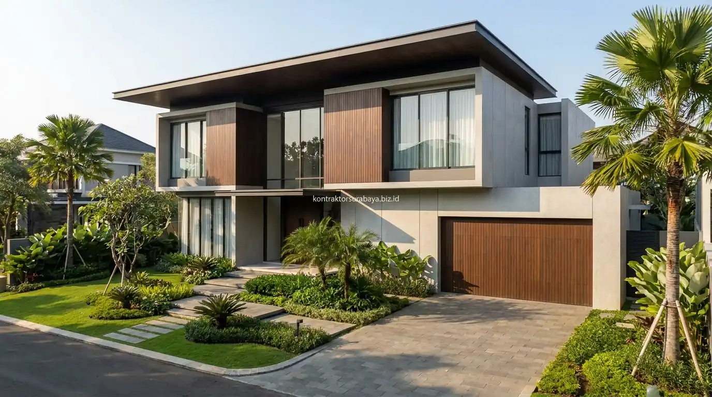

Saat hendak membangun rumah tinggal atau merenovasi properti di Surabaya, Sidoarjo, maupun Gresik, salah satu keputusan paling krusial yang dihadapi pemilik rumah adalah menentukan pelaksana konstruksi: apakah menggunakan jasa kontraktor resmi berbadan hukum atau pemborong harian perorangan.
Meskipun sama-sama bertugas merealisasikan bangunan di lapangan, kedua opsi ini memiliki perbedaan fundamental dalam hal legalitas, metode kerja, skema pembayaran, jaminan garansi, serta mitigasi risiko finansial bagi pemilik proyek.
1. Perbedaan Dasar Kontraktor Resmi dan Pemborong Harian
Kontraktor resmi beroperasi sebagai badan usaha (PT atau CV) dengan struktur tim yang jelas, sementara pemborong harian umumnya bekerja secara perorangan atau kelompok kecil tanpa struktur organisasi formal.
Perbedaan ini memengaruhi banyak aspek dalam proyek konstruksi, mulai dari cara kerja, pembagian tanggung jawab, hingga bagaimana masalah teknis di lapangan ditangani. Kontraktor resmi umumnya memiliki pembagian peran yang jelas antara arsitek perencana, insinyur sipil, pengawas lapangan (site manager), tim logistik, dan tim pelaksana tukang. Sebaliknya, pada pemborong harian, satu orang mandor sering merangkap banyak peran sekaligus—mulai dari belanja material, mengatur tukang, hingga membuat estimasi biaya tanpa dasar perhitungan teknik yang baku.
2. Legalitas dan Perlindungan Hukum bagi Klien
Kontrak kerja tertulis, badan hukum yang jelas, kemungkinan menempuh jalur hukum jika terjadi wanprestasi, dan kepemilikan izin usaha resmi adalah empat aspek legalitas yang membedakan kontraktor resmi dari pemborong harian:
- Kontrak Kerja Tertulis (Surat Perjanjian Kerja / SPK): Mencantumkan hak, kewajiban, jadwal pengerjaan (time schedule), termin pembayaran, serta spesifikasi teknis material secara jelas dan mengikat di mata hukum.
- Badan Hukum yang Jelas (PT/CV): Memudahkan klien mengidentifikasi domisili kantor fisik dan pihak penanggung jawab sah jika terjadi sengketa atau kendala selama proyek berjalan.
- Perlindungan Hukum atas Wanprestasi: Menjadi opsi yang jelas dan berkekuatan eksekutorial ketika bekerja dengan pihak berbadan hukum, dibanding pemborong perorangan yang kerap menghilang (kabur) saat proyek mangkrak.
- Kepemilikan Izin Usaha Konstruksi (NIB & SBU): Menjadi indikator resmi bahwa perusahaan telah memenuhi standar kompetensi administratif dan keselamatan kerja industri konstruksi nasional.
3. Standar Pengerjaan dan Pengawasan Proyek
Kontraktor resmi umumnya menerapkan sistem pengawasan berlapis dengan dokumentasi progres tertulis, sementara pemborong harian sering mengandalkan pengawasan langsung oleh mandor tanpa laporan formal kepada klien.
Sistem pengawasan yang terstruktur pada kontraktor resmi memungkinkan klien memantau progres pekerjaan secara transparan melalui laporan mingguan, lembar kurva S, serta dokumentasi foto tahapan pembesian dan pengecoran. Sementara pada pemborong harian, klien sering kali harus mengorbankan waktu kerja untuk mengecek langsung ke lokasi proyek setiap hari karena ketiadaan sistem pelaporan yang rapi.
4. Tanggung Jawab Garansi dan Purna Bangun
Kontraktor resmi umumnya mencantumkan masa garansi pemeliharaan (retensi struktur dan kebocoran) dalam kontrak kerja, sementara pemborong harian jarang memberikan jaminan tertulis atas hasil pekerjaan setelah proyek selesai.
Ketiadaan jaminan tertulis pada pemborong harian membuat klien tidak memiliki dasar hukum yang kuat untuk menuntut perbaikan apabila muncul masalah struktural, dinding retak rambut, atau kebocoran dak atap setelah bangunan ditempati. Sebaliknya, kontraktor resmi mencantumkan klausul garansi retensi secara eksplisit selama 3 hingga 12 bulan dengan kewajiban perbaikan tuntas tanpa biaya tambahan.
5. Risiko yang Perlu Dipertimbangkan saat Memakai Pemborong Harian
Tidak adanya kontrak tertulis, kesulitan mengklaim jika kualitas pekerjaan buruk, satu mandor merangkap banyak peran sekaligus, dan minimnya dokumentasi progres adalah empat risiko utama yang wajib diwaspadai:
- Ketiadaan Kontrak Tertulis: Membuat kesepakatan awal mengenai harga dan spesifikasi sulit dibuktikan apabila terjadi perselisihan atau pembengkakan biaya di tengah proyek.
- Kesulitan Klaim Kerusakan: Klien sering kali harus mengeluarkan biaya tambahan sendiri untuk memanggil tukang lain saat hasil pengerjaan pemborong tidak rapi.
- Kurangnya Kontrol Mutu Struktural: Mandor tanpa latar belakang teknik sipil kerap mengurangi volume besi tulangan atau takaran semen demi mengejar margin keuntungan sepihak.
- Risiko Proyek Ditinggal Mangkrak: Sistem pembayaran berbasis harian atau borongan upah rawan ditinggalkan oleh pekerja ketika perhitungan biaya awal mandor meleset.
6. Kapan Pemborong Harian Masih Bisa Menjadi Pilihan?
Pemborong harian masih dapat menjadi pilihan yang wajar untuk pekerjaan berskala kecil, seperti perbaikan ringan atau renovasi minor, yang tidak memerlukan perencanaan struktur kompleks maupun dokumentasi formal yang ekstensif.
Untuk pekerjaan sederhana seperti mengecat ulang satu kamar, mengganti keramik teras yang pecah, atau memperbaiki engsel pintu, penggunaan pemborong harian yang sudah dikenal dan memiliki rekam jejak baik di lingkungan sekitar masih dapat menjadi opsi yang praktis dan hemat. Namun, untuk pembangunan rumah baru dari nol atau renovasi total bertingkat, perlindungan kontraktor resmi mutlak diperlukan.
7. Kesalahan yang Membuat Klien Rugi saat Memilih Penyedia Jasa Konstruksi
Beberapa kekeliruan fatal yang sering dialami pemilik lahan saat memilih mitra bangun rumah:
- Tidak Membuat Kesepakatan Tertulis: Hanya mengandalkan rasa percaya lisan yang rawan menimbulkan konflik di kemudian hari.
- Tidak Memeriksa Rekam Jejak & Portofolio Nyata: Tidak menyurvei proyek fisik yang pernah dibangun sebelumnya oleh penyedia jasa.
- Tergiur Tawaran Harga Paling Murah (Unrealistic Low Price): Harga di bawah standar wajar biasanya ditebus dengan pengurangan mutu besi, pasir oplosan, atau tukang yang belum berpengalaman.
- Mengabaikan Klausul Garansi Bangunan: Tidak menanyakan masa retensi pemeliharaan sehingga harus menanggung biaya perbaikan sendiri saat musim hujan tiba.
"Membangun rumah adalah investasi ratusan juta rupiah; legalitas kontrak dan garansi resmi bukan sekadar formalitas, melainkan benteng perlindungan aset dan ketenangan keluarga Anda."
Pemilihan antara kontraktor resmi dan pemborong harian sebaiknya disesuaikan dengan skala, kompleksitas, dan tingkat risiko proyek yang akan dikerjakan. Pelajari cakupan layanan pembangunan rumah lengkap pada halaman jasa kontraktor rumah Surabaya, atau kenali lebih jauh legalitas dan tim kami pada halaman tentang kami.
